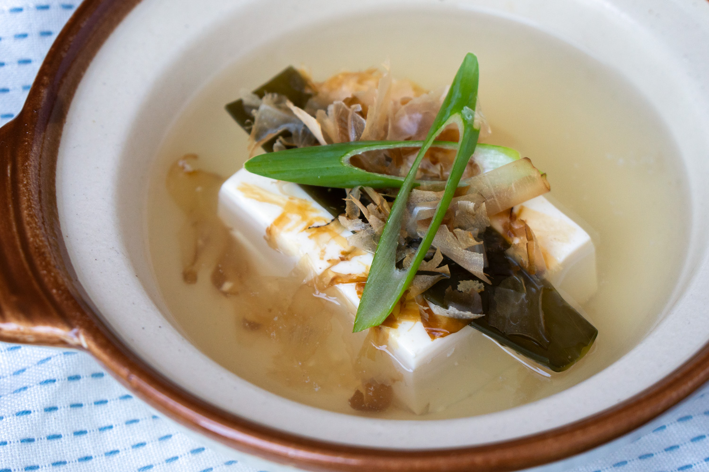
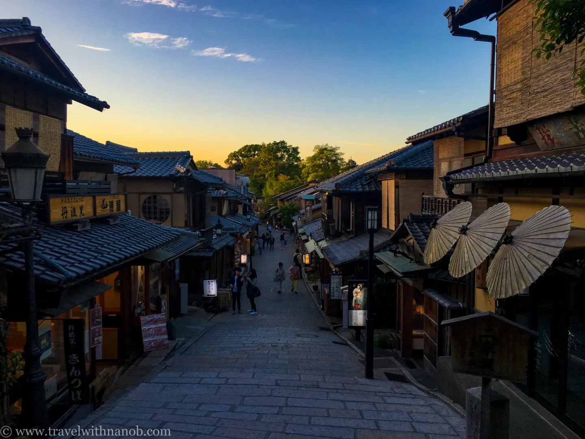

Traditional Foods

Kaiseki Ryori
Traditional multi-course meal showcasing seasonal ingredients
Traditional

Matcha Sweets
Green tea flavored wagashi and traditional confections
Desserts

Yudofu
Silken tofu hot pot, a Buddhist temple specialty
Traditional
Cultural Tradition

Kinkaku-ji Temple
Golden Pavilion covered in gold leaf reflecting in surrounding pond
Year-Round

Gion District
Historic geisha district with traditional wooden machiya houses
Year-Round